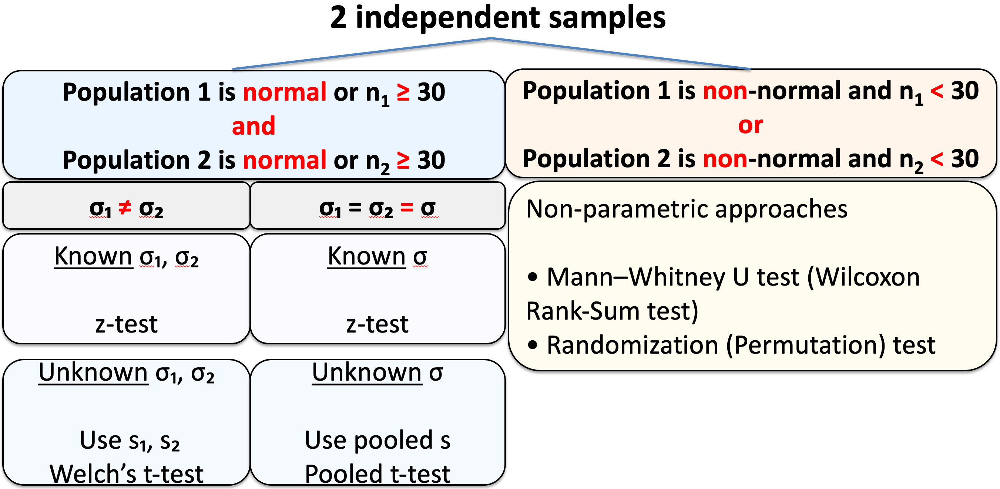

Comparing Two Population Means
MATH 4720/MSSC 5720 Introduction to Statistics
Comparing Two Population Means
Dependent Samples (Matched Pairs)
Independent Samples
Why Comparing Two Populations
-
Often faced with a comparison of parameters from different populations.
Comparing the mean annual income for Male and Female groups.
Testing if a diet used for losing weight is effective from Placebo and New Diet samples.
. . .
- If these two samples are drawn from populations with means \(\mu_1\) and \(\mu_2\) respectively, \[\begin{align}
&H_0: \mu_1 = \mu_2 \\
&H_1: \mu_1 > \mu_2
\end{align}\]
- \(\mu_1\): male mean annual income; \(\mu_2\): female mean annual income
- \(\mu_1\): mean weight loss from the New Diet group; \(\mu_2\): mean weight loss from the Placebo group
-
Often we are faced with an inference involving a comparison of parameters from different populations.
Comparing the mean annual income for male and female groups.
Testing if a diet used for losing weight is effective from Placebo samples and New Diet samples.
-
If these two samples are drawn from populations with means \(\mu_1\) and \(\mu_2\) respectively, then the testing problem can be formulated as \[\begin{align} &H_0: \mu_1 = \mu_2 \\ &H_1: \mu_1 > \mu_2 \end{align}\]
- \(\mu_1\): male mean annual income; \(\mu_2\): female mean annual income
- \(\mu_1\): weight loss from the New Diet group; \(\mu_2\): weight loss from the Placebo group
Dependent and Independent Samples
- The two samples can be independent or dependent.
Two samples are dependent or matched pairs if the sample values are matched, where the matching is based on some inherent relationship.
Height data of fathers and daughters. The height of each dad is matched with the height of his daughter.
Weights of subjects measure before and after some diet treatment. The subjects are the same before and after measurements.
- The statistical methods are different for these two types of samples.
Dependent Samples (Matched Pairs)
- Subject 1 may refer to
- the first matched pair (dad-daughter)
- the same person with two measurements (before and after)
| Subject | (Dad) Before | (Daughter) After |
|---|---|---|
| 1 | \(x_{b1}\) | \(x_{a1}\) |
| 2 | \(x_{b2}\) | \(x_{a2}\) |
| 3 | \(x_{b3}\) | \(x_{a3}\) |
| \(\vdots\) | \(\vdots\) | \(\vdots\) |
| \(n\) | \(x_{bn}\) | \(x_{an}\) |

- Subject 1 dad is 7 feet tall, subject 2 is 5 feet fall
- Subject 1 has weight 200 pounds, subject 2 weight 100 pounds
- It makes more sense to tie the two samples together
Independent Samples
Two samples are independent if the sample values from one population are not related to the sample values from the other.
- Salary samples of men and women. Two samples are drawn independently from the male and female groups.

- Subject 1 of Group 1 has nothing to do with the subject 1 of Group 2.
| Subject of Group 1 (Male) | Measurement of Group 1 | Subject of Group 2 (Female) | Measurement of Group 2 |
|---|---|---|---|
| 1 | \(x_{11}\) | 1 | \(x_{21}\) |
| 2 | \(x_{12}\) | 2 | \(x_{22}\) |
| 3 | \(x_{13}\) | 3 | \(x_{23}\) |
| \(\vdots\) | \(\vdots\) | \(\vdots\) | \(\vdots\) |
| \(n_1\) | \(x_{1n_1}\) | \(\vdots\) | \(\vdots\) |
| \(n_2\) | \(x_{2n_2}\) |
Inference from Two Samples
- The statistical methods are different for these two types of samples.
. . .
- Good news: The concepts of CI and HT for one population can be applied to two-population cases.
. . .
\(\text{CI = point estimate} \pm \text{margin of error (E)}\), e.g., \(\overline{x} \pm t_{\alpha/2, n-1} \frac{s}{\sqrt{n}}\)
Margin of error = critical value \(\times\) standard error of the point estimator
. . .
- The 6 testing steps are the same, and both critical value and \(p\)-value method can be applied too, e.g., \(t_{test} = \frac{\overline{x} - \mu_0}{s/\sqrt{n}}\)
-
To compare two populations from two samples, we will learn and find
the point estimate for the parameter we are interested and its standard error
which critical value and test statistic should be used in which cases
Inferences About Two Means: Dependent Samples (Matched Pairs)
Hypothesis Testing for Dependent Samples
To analyze a paired data set, simply analyze the differences!
| Subject | \(x_1\) | \(x_2\) | Difference \(d = x_1 - x_2\) |
|---|---|---|---|
| 1 | \(x_{11}\) | \(x_{21}\) | \(\color{red}{d_1}\) |
| 2 | \(x_{12}\) | \(x_{22}\) | \(\color{red}{d_2}\) |
| 3 | \(x_{13}\) | \(x_{23}\) | \(\color{red}{d_3}\) |
| \(\vdots\) | \(\vdots\) | \(\vdots\) | \(\color{red}{\vdots}\) |
| \(n\) | \(x_{1n}\) | \(x_{2n}\) | \(\color{red}{d_n}\) |
\(\mu_d = \mu_1 - \mu_2\)
\(\begin{align} & H_0: \mu_1 - \mu_2 = 0 \iff \mu_d = 0 \\ & H_1: \mu_1 - \mu_2 > 0 \iff \mu_d > 0 \\ & H_1: \mu_1 - \mu_2 < 0 \iff \mu_d < 0 \\ & H_1: \mu_1 - \mu_2 \ne 0 \iff \mu_d \ne 0 \end{align}\)
The point estimate of \(\mu_1 - \mu_2\) is \(\overline{x}_1 - \overline{x}_2 = \overline{d}\).
- Transform two samples into one sample by taking the difference between paired measurements.
Inference for Paired Data
-
Requirements: the sample differences \(\color{blue}{d_i}\)s are
- random sample
- from a normal distribution and/or \(n > 30\) (tested by QQ-plot of \(d_i\)s)
Follow the same procedure as the one-sample \(t\)-test!
The test statistic is \(\color{blue}{t_{test} = \frac{\overline{d}-0}{s_d/\sqrt{n}}} \sim T_{n-1}\) under \(H_0\) where \(\overline{d}\) and \(s_d\) are the mean and SD of the difference samples \((d_1, d_2, \dots, d_n)\).
The critical value \(t_{\alpha, n-1}\) and \(t_{\alpha/2, n-1}\).
. . .
| Paired \(t\)-test | Test Statistic | Confidence Interval for \(\mu_d = \mu_1 - \mu_2\) |
|---|---|---|
| \(\sigma_d\) is unknown | \(\large t_{test} = \frac{\overline{d}}{s_d/\sqrt{n}}\) | \(\large \overline{d} \pm t_{\alpha/2, n-1} \frac{s_d}{\sqrt{n}}\) |
- The test from matched pairs is called a paired \(t\)-test.
(Yes, the same as one-sample \(t\)-test)
Example
Consider a capsule used to reduce blood pressure (BP) for the hypertensive individuals. Sample of 10 hypertensive individuals take the medicine for 4 weeks.
Does the data provide sufficient evidence that the treatment is effective in reducing BP?
| Subject | Before \((x_b)\) | After \((x_a)\) | Difference \(d = x_b - x_a\) |
|---|---|---|---|
| 1 | 143 | 124 | 19 |
| 2 | 153 | 129 | 24 |
| 3 | 142 | 131 | 11 |
| 4 | 139 | 145 | -6 |
| 5 | 172 | 152 | 20 |
| 6 | 176 | 150 | 26 |
| 7 | 155 | 125 | 30 |
| 8 | 149 | 142 | 7 |
| 9 | 140 | 145 | -5 |
| 10 | 169 | 160 | 9 |

Example Cont’d
\(\overline{d} = 13.5\), \(s_d= 12.48\).
\(\mu_1 =\) Mean Before, \(\mu_2 =\) Mean After, and \(\mu_d = \mu_1 - \mu_2\).
. . .
- Step 1: \(\begin{align} &H_0: \mu_1 = \mu_2 \iff \mu_d = 0\\ &H_1: \mu_1 > \mu_2 \iff \mu_d > 0 \end{align}\)
. . .
- Step 2: \(\alpha = 0.05\)
. . .
- Step 3: \(t_{test} = \frac{\overline{d}}{s_d/\sqrt{n}} = \frac{13.5}{12.48/\sqrt{10}} = 3.42\)
. . .
- Step 4-c: \(t_{\alpha, n-1} = t_{0.05, 9} = 1.833\).
. . .
- Step 5-c: Since \(\small t_{test} = 3.42 > 1.833 = t_{\alpha, n-1}\), we reject \(H_0\).
. . .
- Step 6: There is sufficient evidence to support the claim that the drug is effective in reducing blood pressure.
We reject \(H_0\) if \(\small t_{test} > t_{\alpha, n-1}\).

Example Cont’d
The 95% CI for \(\mu_d = \mu_1 - \mu_2\) is \[\begin{align}\overline{d} \pm t_{\alpha/2, df} \frac{s_d}{\sqrt{n}} &= 13.5 \pm t_{0.025, 9}\frac{12.48}{\sqrt{10}}\\ &= 13.5 \pm 8.927 \\ &= (4.573, 22.427).\end{align}\]
95% confident that the mean difference in blood pressure is between 4.57 and 22.43.
Since the interval does NOT include 0, it leads to the same conclusion as rejection of \(H_0\).
Two-Sample Paired Test in R
pair_data before after
1 143 124
2 153 129
3 142 131
4 139 145
5 172 152
6 176 150
7 155 125
8 149 142
9 140 145
10 169 160Two-Sample Paired Test in R
. . .
## t.test() function
t.test(x = pair_data$before, y = pair_data$after, alternative = "greater", mu = 0, paired = TRUE)
Paired t-test
data: pair_data$before and pair_data$after
t = 3, df = 9, p-value = 0.004
alternative hypothesis: true mean difference is greater than 0
95 percent confidence interval:
6.3 Inf
sample estimates:
mean difference
14 . . .
- Be careful about the one-sided CI! We should use the two-sided CI!
Inferences About Two Means: Independent Samples
Compare Population Means: Independent Samples
Whether stem cells can improve heart function.
The relationship between pregnant womens’ smoking habits and newborns’ weights.
Whether one variation of an exam is harder than another variation.



Testing for Independent Samples \((\sigma_1 \ne \sigma_2)\)
-
Requirements:
The two samples are independent.
Both samples are a random sample.
\(n_1 > 30\), \(n_2 > 30\) and/or both samples are from a normally distributed population.
Interested in whether the two population means \(\mu_1\) and \(\mu_2\) are equal or not, or one is larger than the other.
\(H_0: \mu_1 = \mu_2\)
It is equivalent to testing if their difference is zero.
\(H_0: \mu_1 - \mu_2 = 0\)
We start with finding a point estimate for \(\mu_1 - \mu_2\). What is the best point estimator for \(\mu_1 - \mu_2\)?
. . .
\(\overline{X}_1 - \overline{X}_2\) is the best point estimator for \(\mu_1 - \mu_2\)!
The difference between the sample means ** \(\overline{X}_1 - \overline{X}_2\) is the best point estimator for \(\mu_1 - \mu_2\) **!
Sampling Distribution of \(\overline{X}_1 - \overline{X}_2\)
If the two samples are from independent normally distributed populations or \(n_1 > 30\) and \(n_2 > 30\), \[\small \overline{X}_1 \sim N\left(\mu_1, \frac{\sigma_1^2}{n_1} \right), \quad \overline{X}_2 \sim N\left(\mu_2, \frac{\sigma_2^2}{n_2} \right)\]
. . .
\(\overline{X}_1 - \overline{X}_2\) has the sampling distribution \[\small \overline{X}_1 - \overline{X}_2 \sim N\left(\mu_1 - \mu_2, \frac{\sigma_1^2}{n_1} {\color{red}{+}} \frac{\sigma_2^2}{n_2} \right) \]
. . .
\[\small Z = \frac{(\overline{X}_1 - \overline{X}_2) - (\mu_1 - \mu_2)}{\sqrt{\frac{\sigma_1^2}{n_1} + \frac{\sigma_2^2}{n_2}}} \sim N(0, 1)\]
Test Statistic for Independent Samples \((\sigma_1 \ne \sigma_2)\)
-
With \(D_0\) a hypothesized value (often 0),
\(\small \begin{align} &H_0: \mu_1 - \mu_2 \le D_0\\ &H_1: \mu_1 - \mu_2 > D_0 \end{align}\) (right-tailed)
\(\small \begin{align} &H_0: \mu_1 - \mu_2 \ge D_0\\ &H_1: \mu_1 - \mu_2 < D_0 \end{align}\) (left-tailed)
\(\small \begin{align} &H_0: \mu_1 - \mu_2 = D_0\\ &H_1: \mu_1 - \mu_2 \ne D_0 \end{align}\) (two-tailed)
If \(\sigma_1\) and \(\sigma_2\) are known, the test statistic is the z-score of \(\small \overline{X}_1 - \overline{X}_2\) under \(H_0\): \[z_{test} = \frac{(\overline{x}_1 - \overline{x}_2) - (\mu_1 - \mu_2)}{\sqrt{\frac{\sigma_1^2}{n_1} + \frac{\sigma_2^2}{n_2}}} = \frac{(\overline{x}_1 - \overline{x}_2) - \color{blue}{D_0}}{\sqrt{\frac{\sigma_1^2}{n_1} + \frac{\sigma_2^2}{n_2}}} \]
Then find \(z_{\alpha}\) or \(z_{\alpha/2}\) and follow our testing steps!
Test Statistic for Independent Samples \((\sigma_1 \ne \sigma_2)\)
- If \(\sigma_1\) and \(\sigma_2\) are unknown, the test statistic becomes \(t_{test}\):
\[t_{test} = \frac{(\overline{x}_1 - \overline{x}_2) - (\mu_1 - \mu_2)}{\sqrt{\frac{\color{red}{s_1^2}}{n_1} + \frac{\color{red}{s_2^2}}{n_2}}} = \frac{(\overline{x}_1 - \overline{x}_2) - \color{blue}{D_0}}{\sqrt{\frac{\color{red}{s_1^2}}{n_1} + \frac{\color{red}{s_2^2}}{n_2}}} \]
. . .
- The critical value \(t_{\alpha, df}\) (one-tailed) and \(t_{\alpha/2, df}\) (two-tailed), and the \(t\) distribution used to compute the \(p\)-value has the degrees of freedom \[\small df = \dfrac{(A+B)^2}{\dfrac{A^2}{n_1-1}+ \dfrac{B^2}{n_2-1}},\] where \(\small A = \dfrac{s_1^2}{n_1}\) and \(\small B = \dfrac{s_2^2}{n_2}\).
- If the \(df\) is not an integer, we round it down to an integer.
similar to the one sample case,
Inference from Independent Samples \((\sigma_1 \ne \sigma_2)\)
| \(\large \color{red}{\sigma_1 \ne \sigma_2}\) | Test Statistic | Confidence Interval for \(\mu_1 - \mu_2\) |
|---|---|---|
| known | \(\large z_{test} = \frac{(\overline{x}_1 - \overline{x}_2) - \color{blue}{D_0}}{\sqrt{\frac{\sigma_1^2}{n_1} + \frac{\sigma_2^2}{n_2}}}\) | \(\large (\overline{x}_1 - \overline{x}_2) \pm z_{\alpha/2} \sqrt{\frac{\sigma_1^2}{n_1} + \frac{\sigma_2^2}{n_2}}\) |
| unknown | \(\large t_{test} = \frac{(\overline{x}_1 - \overline{x}_2) - \color{blue}{D_0}}{\sqrt{\frac{\color{red}{s_1^2}}{n_1} + \frac{\color{red}{s_2^2}}{n_2}}}\) | \(\large (\overline{x}_1 - \overline{x}_2) \pm t_{\alpha/2, df} \sqrt{\frac{\color{red}{s_1^2}}{n_1} + \frac{\color{red}{s_2^2}}{n_2}}\) |
Use \(\small df = \dfrac{(A+B)^2}{\dfrac{A^2}{n_1-1}+ \dfrac{B^2}{n_2-1}},\) where \(\small A = \dfrac{s_1^2}{n_1}\) and \(\small B = \dfrac{s_2^2}{n_2}\) to get the \(p\)-value, critical value, and CI.
The unequal-variance t-test is called Welch’s t-test.
Example: Two-Sample t-Test
Does an oversized tennis racket exert less stress/force on the elbow? The data show
Oversized: \(n_1 = 33\), \(\overline{x}_1 = 25.2\), \(s_1 = 8.6\)
Conventional: \(n_2 = 12\), \(\overline{x}_2 = 33.9\), \(s_2 = 17.4\)
The two populations are nearly normal.
The large difference in the sample SD suggests \(\sigma_1 \ne \sigma_2\).
Form a hypothesis test with \(\alpha = 0.05\) and construct a 95% CI for the mean difference of force on the elbow.

- Step 1: \(\begin{align} &H_0: \mu_1 = \mu_2 \\ &H_1: \mu_1 < \mu_2 \end{align}\)
. . .
- Step 2: \(\alpha = 0.05\)
Example: Two-Sample t-Test Cont’d
- Step 3: \(t_{test} = \frac{(\overline{x}_1 - \overline{x}_2) - (\mu_1-\mu_2)}{\sqrt{\frac{\color{red}{s_1^2}}{n_1} + \frac{\color{red}{s_2^2}}{n_2}}} = \frac{(25.2 - 33.9) - 0}{\sqrt{\frac{\color{red}{8.6^2}}{33} + \frac{\color{red}{17.4^2}}{12}}} = -1.66\)
. . .
\(\small A = \dfrac{8.6^2}{33}\), \(\small B = \dfrac{17.4^2}{12}\), \(\small df = \dfrac{(A+B)^2}{\dfrac{A^2}{33-1}+ \dfrac{B^2}{12-1}} = 13.01\)
If the computed value of \(df\) is not an integer, always round down to the nearest integer.
. . .
Step 4-c: \(-t_{0.05, 13} = -1.77\).
Step 5-c: We reject \(H_0\) if \(\small t_{test} < -t_{\alpha, df}\). \(\small t_{test} = -1.66 > -1.77 = -t_{\alpha, df}\), we fail to reject \(H_0\).
Step 6: There is insufficient evidence to support the claim that the oversized racket delivers less stress to the elbow.
Example: Two-Sample t-Test Cont’d
- The 95% CI for \(\mu_1 - \mu_2\) is
\[\begin{align}(\overline{x}_1 - \overline{x}_2) \pm t_{\alpha/2, df} \sqrt{\frac{\color{red}{s_1^2}}{n_1} + \frac{\color{red}{s_2^2}}{n_2}} &= (25.2 - 33.9) \pm t_{0.025,13}\sqrt{\frac{8.6^2}{33} + \frac{17.4^2}{12}}\\&= -8.7 \pm 11.32 = (-20.02, 2.62).\end{align}\]
We are 95% confident that the difference in the mean forces is between -20.02 and 2.62.
Since the interval includes 0, it leads to the same conclusion as failing to reject \(H_0\).
Two-Sample t-Test in R
n1 = 33; x1_bar = 25.2; s1 = 8.6
n2 = 12; x2_bar = 33.9; s2 = 17.4
A <- s1^2 / n1; B <- s2^2 / n2
df <- (A + B)^2 / (A^2/(n1-1) + B^2/(n2-1))
(df <- floor(df))[1] 13## t_test
(t_test <- (x1_bar - x2_bar) / sqrt(s1^2/n1 + s2^2/n2))[1] -1.7## t_cv
qt(p = 0.05, df = df)[1] -1.8## p_value
pt(q = t_test, df = df)[1] 0.06Test Statistic for Independent Samples \((\sigma_1 = \sigma_2 = \sigma)\)
- If \(\sigma_1\) and \(\sigma_2\) are known,
\[z_{test} = \frac{(\overline{x}_1 - \overline{x}_2) - (\mu_1 - \mu_2)}{\sigma\sqrt{\frac{1}{n_1} + \frac{1}{n_2}}} = \frac{(\overline{x}_1 - \overline{x}_2) - \color{blue}{D_0}}{\sigma\sqrt{\frac{1}{n_1} + \frac{1}{n_2}}} \]
. . .
If \(\sigma_1\) and \(\sigma_2\) are unknown, similar to the one sample case, we use \(t_{test}\).
As \(\sigma_1 = \sigma_2 = \sigma\), we don’t need two but one sample SD to replace the \(\sigma\).
Use the pooled sample variance to estimate the common \(\sigma^2\):
\[ s_p^2 = \frac{(n_1-1)s_1^2 + (n_2-1)s_2^2}{n_1+n_2-2} \] which is the weighted average of \(s_1^2\) and \(s_2^2\).
- But not so similar to the equal-variance case.
Test Statistic for Independent Samples \((\sigma_1 = \sigma_2 = \sigma)\)
If \(\sigma_1\) and \(\sigma_2\) are unknown, \[t_{test} = \frac{(\overline{x}_1 - \overline{x}_2) - (\mu_1 - \mu_2)}{ {\color{red}{s_p}}\sqrt{\frac{1}{n_1} + \frac{1}{n_2}}} = \frac{(\overline{x}_1 - \overline{x}_2) - \color{blue}{D_0}}{{\color{red}{s_p}}\sqrt{\frac{1}{n_1} + \frac{1}{n_2}}}\]
Here, the critical value \(t_{\alpha, df}\) (for one-tailed tests) and \(t_{\alpha/2, df}\) (for two-tailed tests), and the \(t\) distribution used to compute the \(p\)-value have the degrees of freedom \[df = n_1 + n_2 - 2\]
Inference from Independent Samples \((\sigma_1 = \sigma_2 = \sigma)\)
| \(\large \color{red}{\sigma_1 = \sigma_2}\) | Test Statistic | Confidence Interval for \(\mu_1 - \mu_2\) |
|---|---|---|
| known | \(\large z_{test} = \frac{(\overline{x}_1 - \overline{x}_2) - \color{blue}{D_0}}{\sigma\sqrt{\frac{1}{n_1} + \frac{1}{n_2}}}\) | \(\large (\overline{x}_1 - \overline{x}_2) \pm z_{\alpha/2} \sigma \sqrt{\frac{1}{n_1} + \frac{1}{n_2}}\) |
| unknown | \(\large t_{test} = \frac{(\overline{x}_1 - \overline{x}_2) - \color{blue}{D_0}}{{\color{red}{s_p}}\sqrt{\frac{1}{n_1} + \frac{1}{n_2}}}\) | \(\large (\overline{x}_1 - \overline{x}_2) \pm t_{\alpha/2, df} {\color{red}{s_p}}\sqrt{\frac{1}{n_1} + \frac{1}{n_2}}\) |
\(s_p = \sqrt{\frac{(n_1-1)s_1^2 + (n_2-1)s_2^2}{n_1+n_2-2}}\)
Use \(df = n_1+n_2-2\) get the \(p\)-value, critical value and CI.
The test from two independent samples with \(\sigma_1 = \sigma_2 = \sigma\) is usually called two-sample pooled \(z\)-test or two-sample pooled \(t\)-test.
Example: Weight Loss
A study was conducted to see the effectiveness of a weight loss program.
Two groups (Control and Experimental) of 10 subjects were selected.
The two populations are normally distributed and have the same SD.
-
The data on weight loss was collected at the end of six months
- Control: \(n_1 = 10\), \(\overline{x}_1 = 2.1\, lb\), \(s_1 = 0.5\, lb\)
- Experimental: \(n_2 = 10\), \(\overline{x}_2 = 4.2\, lb\), \(s_2 = 0.7\, lb\)
Is there a sufficient evidence at \(\alpha = 0.05\) to conclude that the program is effective?
If yes, construct a 95% CI for \(\mu_1 - \mu_2\) to show how much effective it is.
. . .
- Step 1: \(\begin{align} &H_0: \mu_1 = \mu_2 \\ &H_1: \mu_1 < \mu_2 \end{align}\)
. . .
- Step 2: \(\alpha = 0.05\)
Example Cont’d
Step 3: \(t_{test} = \frac{(\overline{x}_1 - \overline{x}_2) - \color{blue}{D_0}}{{\color{red}{s_p}}\sqrt{\frac{1}{n_1} + \frac{1}{n_2}}}\).
\(s_p = \sqrt{\frac{(n_1-1)s_1^2 + (n_2-1)s_2^2}{n_1+n_2-2}} = \sqrt{\frac{(10-1)0.5^2 + (10-1)0.7^2}{10+10-2}}=0.61\)
\(t_{test} = \frac{(2.1 - 4.2) - 0}{0.6083\sqrt{\frac{1}{10} + \frac{1}{10}}} = -7.72\)
. . .
- Step 4-c: \(df = n_1 + n_2 - 2 = 10 + 10 - 2 = 18\). So \(-t_{0.05, df = 18} = -1.734\).
. . .
- Step 5-c: We reject \(H_0\) if \(\small t_{test} < -t_{\alpha, df}\). Since \(\small t_{test} = -7.72 < -1.73 = -t_{\alpha, df}\), we reject \(H_0\).
. . .
- Step 4-p: The \(p\)-value is \(P(T_{df=18} < t_{test}) \approx 0\)
. . .
- Step 5-p: We reject \(H_0\) if \(p\)-value < \(\alpha\). Since \(p\)-value \(\approx 0 < 0.05 = \alpha\), we reject \(H_0\).
. . .
- Step 6: There is sufficient evidence to support the claim that the weight loss program is effective.
Example Cont’d
The 95% CI for \(\mu_1 - \mu_2\) is \[\begin{align}(\overline{x}_1 - \overline{x}_2) \pm t_{\alpha/2, df} {\color{red}{s_p}}\sqrt{\frac{1}{n_1} + \frac{1}{n_2}} &= (2.1 - 4.2) \pm t_{0.025, 18} (0.61)\sqrt{\frac{1}{10} + \frac{1}{10}}\\ &= -2.1 \pm 0.57 = (-2.67, -1.53) \end{align}\]
We are 95% confident that the difference in the mean weight loss is between -2.67 and -1.53.
Since the interval does not include 0, it leads to the same conclusion as rejection of \(H_0\).
Two-Sample Pooled t-Test in R
n1 = 10; x1_bar = 2.1; s1 = 0.5
n2 = 10; x2_bar = 4.2; s2 = 0.7
sp <- sqrt(((n1 - 1) * s1 ^ 2 + (n2 - 1) * s2 ^ 2) / (n1 + n2 - 2))
sp[1] 0.61df <- n1 + n2 - 2
## t_test
(t_test <- (x1_bar - x2_bar) / (sp * sqrt(1 / n1 + 1 / n2)))[1] -7.7## t_cv
qt(p = 0.05, df = df)[1] -1.7## p_value
pt(q = t_test, df = df)[1] 2e-07